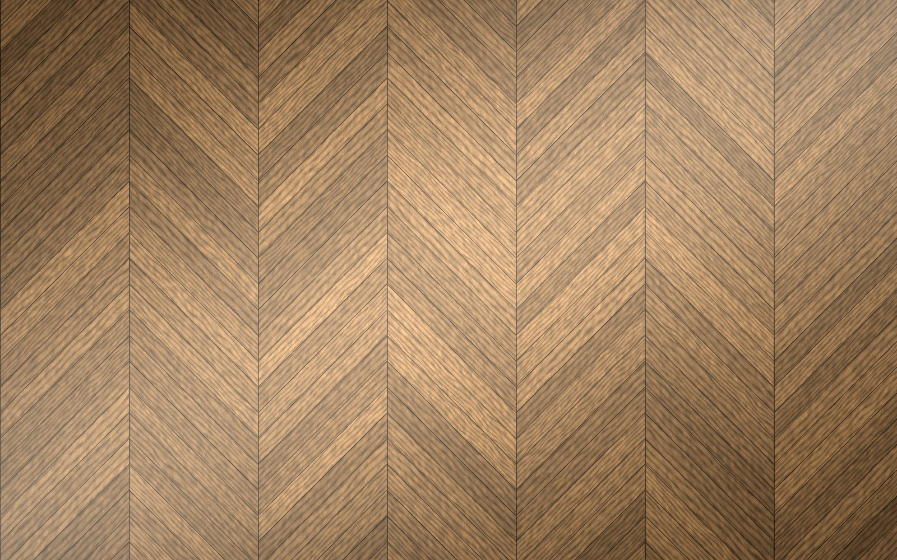
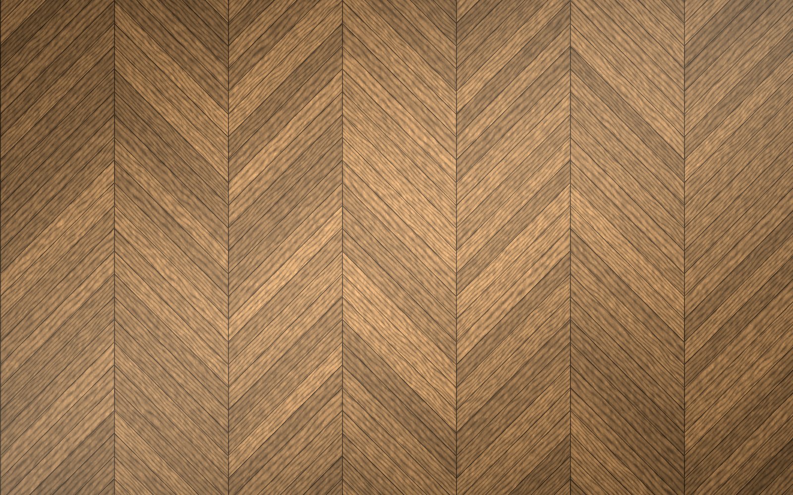
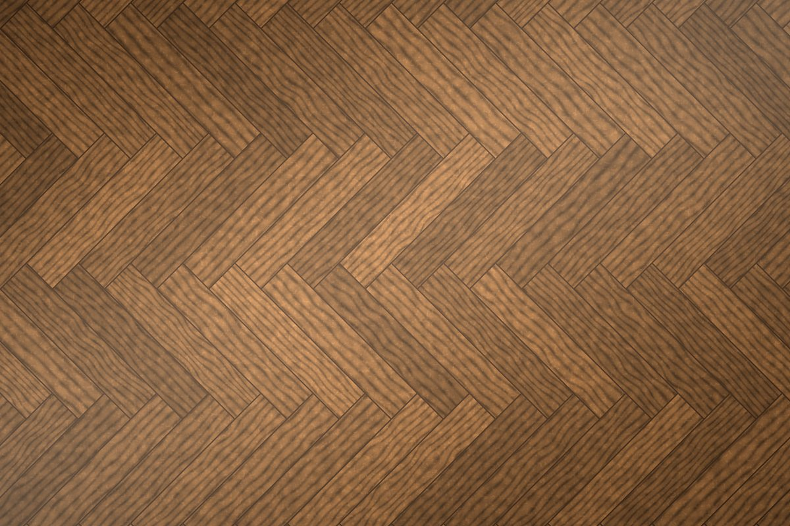

Ponçage de parquet haussmannien à Paris
Point de Hongrie, bâton rompu, parquet Versailles : SGE redonne à vos parquets anciens leur éclat d'origine, avec la méthode et le soin qu'exige un bois centenaire.
En bref : SGE est une entreprise spécialisée dans le ponçage, la vitrification et la restauration de parquets anciens dans les appartements haussmanniens de Paris et de l'ouest parisien. Tarifs à partir de 70 €/m², devis gratuit sous 24 h.
À partir de 70 €/m² · Paris & Île-de-France
- Devis gratuit sous 24 hVisite ou estimation sur photos
- Ponçage aspiréPoussière captée à la source
- Spécialistes du parquet ancienPoint de Hongrie, bâton rompu, Versailles
- Assurance décennaleAttestation fournie avec le devis
- Produits à faible COVVitrificateurs en phase aqueuse
- Devis ligne par ligneAucun frais caché
Nos prestations
Tout pour sublimer un parquet ancien
Du simple ponçage à la restauration complète d'un parquet Versailles, nous maîtrisons chaque étape.

Ponçage de parquet ancien
Ponçage de parquet haussmannien à Paris et en Île-de-France : point de Hongrie, bâton rompu, Versailles. Ponçage sans poussière, devis gratuit sous…
En savoir plus →
Vitrification de parquet
Vitrification de parquet ancien à Paris : vitrificateurs bi-composants à l'eau, finition mat ou effet bois brut, haute résistance. Ponçage +…
En savoir plus →
Huilage, cirage et teinte
Huilage, cirage traditionnel et teinte de parquet ancien à Paris. Finitions naturelles respectueuses du chêne haussmannien. Ponçage + huile dès 75…
En savoir plus →Rénovation de parquet point de Hongrie
Spécialiste de la rénovation de parquet point de Hongrie à Paris : ponçage, remplacement de lames coupées à 45°, vitrification, huile ou cire. Devis…
En savoir plus →
Rénovation de parquet bâton rompu
Rénovation de parquet en bâton rompu (chevron droit) à Paris : ponçage aspiré, réparation, recalage des lames, vitrification, huile ou cire. Dès 70…
En savoir plus →
Restauration de parquet Versailles
Restauration et ponçage de parquets à panneaux Versailles, Chantilly et à compartiments à Paris : réparation de panneaux, ponçage, cire ou huile.…
En savoir plus →
Réparation et restauration de parquet ancien
Réparation de parquet ancien à Paris : remplacement de lames, suppression des grincements, rebouchage des joints, traitement des insectes, dégâts des…
En savoir plus →Le résultat
Du parquet grisé au chêne lumineux
Faites glisser le curseur pour comparer. Un ponçage en trois passes suivi d'une finition adaptée suffit à révéler la beauté du chêne et le dessin des chevrons, même sur un parquet très encrassé.
- Rayures, taches grises et ancien vernis jaune éliminés
- Joints rebouchés, lames abîmées remplacées
- Finition mate « bois brut », huilée ou cirée
Notre expertise
Pourquoi un parquet haussmannien demande un spécialiste
Les parquets des immeubles parisiens construits entre 1850 et 1914 sont en chêne massif cloué sur lambourdes, posés en motifs dont le fil change de direction tous les quarante centimètres. Un ponçage standard, mené dans le sens de la pièce, y laisse des marques de disque, des fibres arrachées et des creux dans les passages.
Chez SGE, nous ponçons en diagonale du motif, en trois grains, et terminons chaque pièce à la monobrosse. Nous mesurons l'épaisseur d'usure avant d'intervenir pour ne retirer que le strict nécessaire : votre parquet pourra encore être rénové par les générations suivantes.
Notre méthode de ponçageMéthode
Un chantier propre, organisé, sans surprise
- Diagnostic gratuitMesure, épaisseur d'usure, état des lames et conseils de finition.
- Devis détaillé sous 24 hChaque poste chiffré : ponçage, finition, options, réparations.
- Protection du chantierParties communes, portes, plinthes et pièces voisines protégées.
- Ponçage 3 passes aspiréGrains progressifs en diagonale du motif, bordures et angles à la main.
- Finition multicoucheVitrificateur, huile ou cire appliqués avec égrenage entre couches.
- Réception avec vousContrôle en lumière rasante et remise du guide d'entretien.
Tarifs transparents
À partir de 70 €/m², sans frais cachés
Notre prix comprend un vrai ponçage en trois passes, les bordures et angles réalisés à la main, la protection du chantier et une finition professionnelle en trois couches. Les options sont chiffrées séparément, ligne par ligne.
Voir la grille complèteEstimez votre budget
À partir de 2 800 € HT
Estimation indicative. Prix ferme après diagnostic gratuit.
Avis clients
Ils nous ont confié leur parquet
Consultez les avis de nos clients sur Google et partagez le vôtre après votre chantier.
Zones d'intervention
Paris et ouest parisien
Nous intervenons dans tous les arrondissements de Paris et dans les communes des Hauts-de-Seine et des Yvelines au riche patrimoine ancien.
Questions fréquentes
Quel est le prix du ponçage d'un parquet haussmannien à Paris ?
Chez SGE, le ponçage complet d'un parquet ancien avec vitrification 3 couches commence à 70 €/m². Le prix final dépend de l'état du bois (taches, lames abîmées, joints ouverts), du motif (point de Hongrie, bâton rompu, Versailles) et de la finition choisie (vitrificateur, huile ou cire). Le devis est gratuit et détaillé après visite ou envoi de photos.
Combien de temps durent les travaux ?
Comptez en général 2 à 3 jours pour 30 à 50 m² : une journée de ponçage, puis l'application de la finition en plusieurs couches avec les temps de séchage. On peut marcher en chaussettes 12 à 24 h après la dernière couche et réinstaller les meubles au bout de 48 à 72 h selon le produit.
Le ponçage fait-il beaucoup de poussière ?
Nos ponceuses sont reliées à des aspirateurs à filtration haute performance. La quasi-totalité de la poussière est captée à la source, les portes et passages sont protégés par des films de confinement, et le chantier est aspiré avant chaque couche de finition.
Un parquet ancien peut-il être poncé plusieurs fois ?
Oui. Un parquet massif ancien possède généralement une couche d'usure de 6 à 10 mm au-dessus de la languette, ce qui permet plusieurs ponçages au cours de sa vie. Nous mesurons l'épaisseur disponible avant d'intervenir et adaptons le grain pour ne retirer que le strict nécessaire.
Vitrifier, huiler ou cirer : que choisir ?
La vitrification est la plus résistante et la plus simple d'entretien (idéale pour les pièces de vie et les familles). L'huile donne un aspect naturel et se répare localement. La cire offre la patine la plus authentique pour un parquet haussmannien mais demande un entretien régulier. Nous vous conseillons selon l'usage de chaque pièce.
Comment obtenir un devis ?
Remplissez le formulaire en ligne en joignant quelques photos, ou appelez-nous. Nous vous répondons sous 24 h ouvrées et nous déplaçons gratuitement à Paris et en proche banlieue pour mesurer et diagnostiquer le parquet.
Devis gratuit
Parlez-nous de votre parquet
Décrivez votre projet et joignez quelques photos : nous revenons vers vous sous 24 h ouvrées avec une première estimation, puis fixons une visite gratuite.
- Sans engagement
- Visite et métré offerts à Paris et proche banlieue
- Devis détaillé, valable 3 mois
Ou appelez-nous : 01 00 00 00 00
Lundi – vendredi : 8 h – 19 h · Samedi : 9 h – 13 h